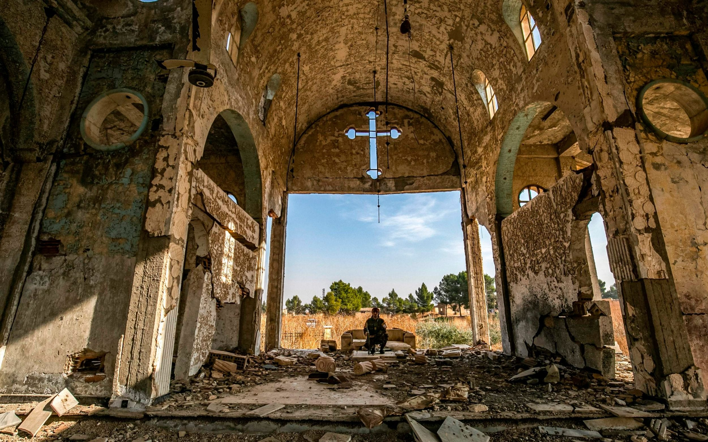

Introduction
Since the 1970s, especially after the revolution that toppled Hosni Mubarak, the Egyptian Orthodox Christian community, known as "Copts," has been the focus of violence and prejudice. The Egyptian government hasn't done much to improve the situation and has occasionally encouraged animosity between Muslims and Christians. Establishing governmental institutions that protect all people's constitutional rights is necessary to achieve religious freedom and equality.

- Churches frequently become targets of anti-Coptic assaults. In Egypt, building and remodelling churches is a highly political process that traditionally requires presidential consent to move further.
- The army and police routinely fail to step in to protect the population when Copts are physically attacked, allowing assaults to continue. Security forces have occasionally even used deadly force against defenceless Copts
- Although there is a sectarian component to Muslim attacks against Copts, this is not the primary source of conflict. Copts are a focus of social strife in Egypt because of the country's antiquated laws and authoritarian structures.
TIMELINE TIMELINE TIMELINE TIMELINE TIMELINE TIMELINE TIMELINE TIMELINE
TIMELINE
0
Copts in Egypt
0
Of the Egyptian population
0
Copts living abroad